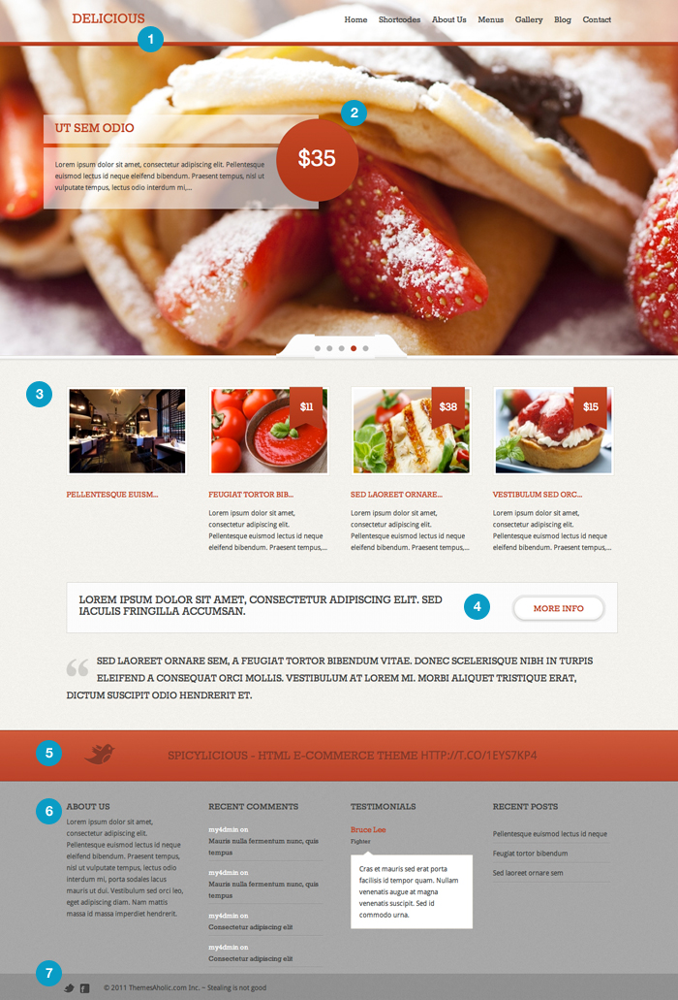
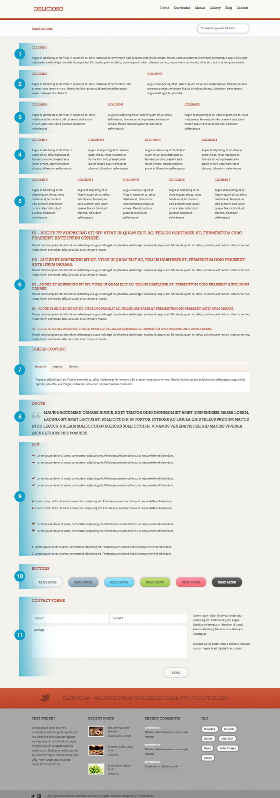

Delicioso WordPress Theme
WordPress Theme
Delicioso is a great looking restaurant WordPress theme built with the amazing functions that will help you to run your restaurant website without loosing too much time and with very positive impression to your guests.
Thank you for purchasing our template. If you have any questions that are beyond the scope of this help file, please feel free to let us know.
If any or all of this documentation is not totally clear, please let us know so we can improve our documentation and help you with something when our assistance is required. Thanks so much!
WordPress Tips and Theme Installation
Installing WordPress
Before installing, please be sure to have the following ready:
- Access to your web server via FTP
- A text editor
- Your web browser of choice
1. Download WordPress
The first thing you need to do is download the latest version of WordPress. Download the package and unzip it. Then, using your FTP manager, upload the files into the directory where you would like your site to be installed.
2. Create a MySQL Database
If you are using a professional web hosting service, you may already have a WordPress database set up for you or there may be an automated setup solution to do so. Check your web hosting service's support page or your control panel for clues about whether or not you will need to create one manually.
We use cPanel to manage all of our accounts and MySQL databases. To create a MySQL database in cPanel, simply log in to your account and click on the "MySQL Databases" icon followed by "Create a New Database".
3. Run The Installation
Thanks to the latest version of WordPress, it is no longer compulsory to edit your configuration file (wp-config.php). Instead, simply type in the URL of the directory in which you uploaded the WordPress files and enter the specifics of your database connection - database name, database username, database password, database host (localhost in most cases).
If WordPress cannot find your configuration file, it will notify you and offer to create and edit the file automatically (you can also do this directly by loading wp-admin/setup-config.php in your web browser). WordPress will then ask you for your database details and once entered by you, will write them to a new wp-config.php file. If this works, you can go ahead with the installation, otherwise, go back and create, edit, and upload the wp-config.php file yourself.
Navigate to where you extracted the WordPress package, alocate and rename the file wp-config-sample.php to wp-config.php, open it in a text editor and edit the following fields.
DB_NAME - The name of the database
DB_USER - The username you created
DB_PASSWORD - The password
DB_HOST - The hostname (99% of the time this is "localhost" (the default value) and will not require changing)
DB_CHARSET - The database character set, normally should not be changed
DB_COLLATE - The database collation should normally be left blank
Save the file.
Adding the Delicioso WordPress Theme
To add Delicioso WordPress Theme to your WordPress installation, follow these basic steps:
1. Download and unzip the Delicioso_theme folder from ThemesAholic.
2. Next you will need an FTP program such as Total Commander, Transmit or Filezilla.
3. Login to your host server using your FTP software.
4. Unzip (Delicioso_theme > WP > Delicioso.zip) and upload the theme folder in to the /wp-content/themes/ directory.
Selecting the Uploaded Theme
1. Log in to the your WordPress Administration Panel.
2. Select the Appearance panel, then Themes.
3. From the Available Themes section, click on the Delicioso WordPress Theme title (or Delicioso WordPress Theme screenshot).
4. A preview of the Delicioso WordPress Theme will be shown.
5. To activate the Delicioso WordPress Theme click the Activate Delicioso WordPress Theme link in the top right.
6. Your theme should immediately become active.
Theme setup
First steps after activation
Permalinks
Permalinks are the permanent URLs to your individual posts, pages or categories… A permalink is what another visitor will use to link to your article (or section), or how you might send a link to your story in an e-mail message.
To change the default permalink structure, go to the your WordPress Administration Panel -> Options -> Permalinks, and paste this code into the Custom Structure field (without number 1)
/%postname%/
click the Update Permalink Structure
Creating the first pages
To create the first pages, go to the your WordPress Administration Panel.
1. Create one WordPress Page from the "Add New Page" panel.
1.1 Title it as "Home" (or another name) as your "static" front page.
1.2 Publish the Page.
2. Go to Administration > Settings > Reading panel.
Set 'Front page displays:' to 'a static page' and choose the first page you created above for 'Front page.'
3. Save changes.
Creating Menus
Customization of the your navigation menu allows you to:
- Change the order of pages
- Nest pages to create sub-menus
- Display posts on multiple pages by creating category pages
- Add posts, tag pages, and custom links to your navigation menu
To create a menu, go to Appearance -> Menus in your WordPress Administration Panel. Type in a name for it (only you will see this) and click Create Menu. NOTE: You need to create two menus, left and right
Adding Pages to Your Menu
Adding pages to your menu is as simple as checking the proper boxes for the pages you want and then clicking Add to Menu.
Activating Your Menu
In the Theme Locations module, under Right Navigation, select the title of the custom menu you want to use for right navigation and under Left Navigation, select the title of the custom menu you want to use for left navigation and click Save.
Home Page

1. Website Logo and Favicon - In your WordPress Administration Panel, click on Appearance -> Delicioso Panel in the left sidebar. In the second two sections of the Delicioso Panel you can upload your logo and your favicon.
2. Slider Posts
3. Home Page Featured posts - In your WordPress Administration Panel, click on Appearance -> Delicioso Panel in the left sidebar. In the Frontpage of the Delicioso panel you can select your home page featured posts category.
4. More Info Area - In your WordPress Administration Panel, click on Appearance -> Delicioso Panel in the left sidebar. In the Frontpage of the Delicioso panel you can edit your more info section
5. Twitter Feed - To change the twitter username In your WordPress Administration Panel, click on Appearance -> Delicioso Panel in the left sidebar, on the front page in the section Twitter add your Twitter username.
6. Widgets - Add widgets in Widgets area of the WordPress Administration panel.
7. Social Links - In your WordPress Administration Panel, click on Appearance -> Delicioso Panel in the left sidebar. In the sections Twitter and Facebok you can add your links.
Copyright Text - Copyright text can be changed from Delicioso Panel, section Footer Copyright Text.
Slider Posts
1. Create the category you want to use for slider images
2. Click on Appearance -> Delicioso Panel in the left sidebar. In the Frontpage of the Delicioso panel you can select which category you have created for your slider posts
3. Click the Posts tab.
4. Click the Add New Sub Tab
5. Start filling in the blank fields.
Title
The title of your post. You can use any words or phrases. Avoid using the same title twice as that will cause problems. You can use commas, apostrophes, quotes, hypens/dashes, and other typical symbols.
Post Editing Area
The blank box where you enter your meal description.
Categories
Select the category you have created for slider posts. To add a new category, click the +Add New Category link in this section. You can add and manage your categories by going to Posts > Categories in your Dashboard.
Item Price
The Price of the meal you enetering. It will be shown in slider, menus page and aslo on front page featured posts
Featured Image
Image that will be used for slider image
6. When you are ready, click Publish.
Gallery Page
If you would like to show your customers images of your restaurant do the following:
1. Create one WordPress Page from the "Add New Page" panel.
2. Title it as "Gallery" (or another name).
3. Select the "Gallery" page template
4. Publish the Page.
5. Create the category you want to use for your gallery posts
6. Click on Appearance -> Delicioso Panel in the left sidebar. In the Menus and Gallery of the Delicioso panel you can select the category you created for the Gallery page
7. Click the Posts tab.
8. Click the Add New Sub Tab
9. Start filling in the blank fields.
Title
The title of your post. You can use any words or phrases. Avoid using the same title twice as that will cause problems. You can use commas, apostrophes, quotes, hypens/dashes, and other typical symbols.
Post Editing Area
The blank box where you enter your meal description.
Categories
Select the category you have created for slider posts. To add a new category, click the +Add New Category link in this section. You can add and manage your categories by going to Posts > Categories in your Dashboard.
Item Price
The Price of the meal you enetering. It will be shown in slider, menus page and aslo on front page featured posts
Featured Image
Image that will be used for restaurant image
6. When you are ready, click Publish.
Blog Page
If you would like to write blog for your restaurant please do the following:
1. Create one WordPress Page from the "Add New Page" panel.
2. Title it as "Blog" (or another name).
3. Select the "Blog" page template
4. Publish the Page.
5. Create the categories you want to use for your blog posts
6. Click on Appearance -> Delicioso Panel in the left sidebar. In the blog of the Delicioso panel you can select the categories you created for the blog page
7. Click the Posts tab.
8. Click the Add New Sub Tab
9. Start filling in the blank fields.
Title
The title of your post. You can use any words or phrases. Avoid using the same title twice as that will cause problems. You can use commas, apostrophes, quotes, hypens/dashes, and other typical symbols.
Post Editing Area
The blank box where you enter your meal description.
Categories
Select the category you have created for slider posts. To add a new category, click the +Add New Category link in this section. You can add and manage your categories by going to Posts > Categories in your Dashboard.
Featured Image
Image that will be used for blog post image
6. When you are ready, click Publish.
Testimonials
If you would like to add some nice testimonials of your costumers do the following:
1. Click on Appearance -> Delicioso Panel in the left sidebar. In the Testimonials section of the Delicioso panel you can add testimonials of your costumers.
Shortcode generator
While writing a page or post, you will see some additional buttons below the editing area. Those buttons will help you to easily add shortcode to your new post or pages.

1. Add Fullwidth text
2. Add 2 Columns
3. Add 3 Columns
3. Add 4 Columns
5. Add 5 Columns
6. Add Headlines H1 - H2 - H3 - H4 - H5
7. Add Tabbed Content
8. Add Quote
9. Add List
10. Add Buttons
11. Add Contact Form
How to Change Style?
To change style of the your site in your WordPress Administration Panel, click on Appearance -> Delicioso Panel in the left sidebar. In the first section pick the style you want to use.